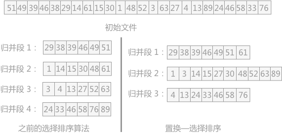
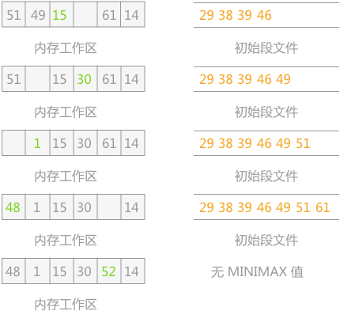
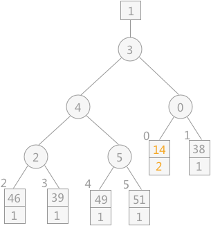
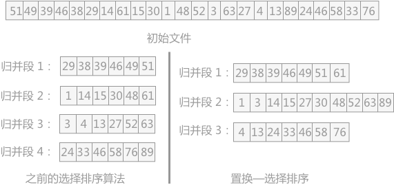
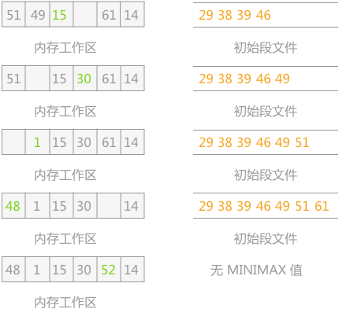
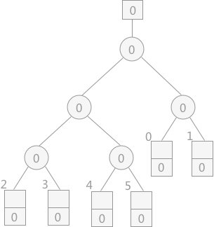
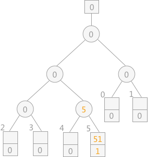
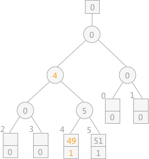
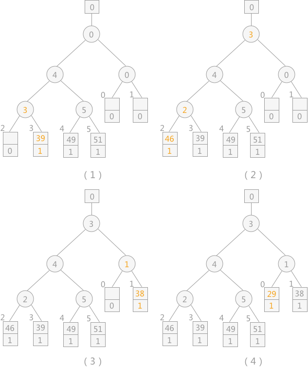
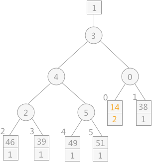

置换选择排序算法详解
上一节介绍了增加 k-路归并排序中的 k 值来提高外部排序效率的方法，而除此之外，还有另外一条路可走，即减少初始归并段的个数，也就是本章第一节中提到的减小 m 的值。
所以要另想它法，探索一种新的排序方法：置换—选择排序算法。
例如已知初始文件中总共有 24 个记录，假设内存工作区最多可容纳 6 个记录，按照之前的选择排序算法最少也只能分为 4 个初始归并段。而如果使用置换—选择排序，可以实现将 24 个记录分为 3 个初始归并段，如图 1 所示：

置换—选择排序算法的具体操作过程为：
拿图 1 中的初始文件为例，首先输入前 6 个记录到内存工作区，其中关键字最小的为 29，所以选其为 MINIMAX 记录，同时将其输出到归并段文件中，如下图所示：
此时初始文件不为空，所以从中输入下一个记录 14 到内存工作区中，然后从内存工作区中的比 29 大的记录中，选择一个最小值作为新的 MINIMAX 值输出到 归并段文件中，如下图所示：
初始文件还不为空，所以继续输入 61 到内存工作区中，从内存工作区中的所有关键字比 38 大的记录中，选择一个最小值作为新的 MINIMAX 值输出到归并段文件中，如下图所示：

如此重复性进行，直至选不出 MINIMAX 值为止，如下图所示：

当选不出 MINIMAX 值时，表示一个归并段已经生成，则开始下一个归并段的创建，创建过程同第一个归并段一样，这里不再赘述。
在上述创建初始段文件的过程中，需要不断地在内存工作区中选择新的 MINIMAX 记录，即选择不小于旧的 MINIMAX 记录的最小值，此过程需要利用“败者树”来实现。
同上一节所用到的败者树不同的是，在不断选择新的 MINIMAX 记录时，为了防止新加入的关键字值小的的影响，每个叶子结点附加一个序号位，当进行关键字的比较时，先比较序号，序号小的为胜者；序号相同的关键字值小的为胜者。
在初期创建败者树时也可以通过不断调整败者树的方式，其中所有记录的序号均设为 0 ，然后从初始文件中逐个输入记录到内存工作区中，自下而上调整败者树。过程如下：
由败者树得知，其最终胜者为 29，设为 MINIMAX 值，将其输出到初始归并文件中，同时再读入下一个记录 14，调整败者树，如下图所示：

注意：当读入新的记录时，如果其值比 MINIMAX 大，其序号则仍为 1；反之则为 2 ，比较时序号 1 比序号 2的记录大。
通过不断地向败者树中读入记录，会产生多个 MINIMAX，直到最终所有叶子结点中的序号都为 2，此时产生的新的 MINIMAX 值的序号 2，表明此归并段生成完成，而此新的 MINIMAX 值就是下一个归并段中的第一个记录。
如果要想减小 m 的值，在外部文件总的记录数 n 值一定的情况下，只能增加每个归并段中所包含的记录数 l。而对于初始归并段的形成，就不能再采用上一章所介绍的内部排序的算法，因为所有的内部排序算法正常运行的前提是所有的记录都存在于内存中，而内存的可使用空间是一定的，如果增加 l 的值，内存是盛不下的。m 的求值方法为：m=⌈n/l⌉（n 表示为外部文件中的记录数，l 表示初始归并段中包含的记录数）
所以要另想它法，探索一种新的排序方法：置换—选择排序算法。
例如已知初始文件中总共有 24 个记录，假设内存工作区最多可容纳 6 个记录，按照之前的选择排序算法最少也只能分为 4 个初始归并段。而如果使用置换—选择排序，可以实现将 24 个记录分为 3 个初始归并段，如图 1 所示：

图 1 选择排序算法的比较
置换—选择排序算法的具体操作过程为：
- 首先从初始文件中输入 6 个记录到内存工作区中；
- 从内存工作区中选出关键字最小的记录，将其记为 MINIMAX 记录；
- 然后将 MINIMAX 记录输出到归并段文件中；
- 此时内存工作区中还剩余 5 个记录，若初始文件不为空，则从初始文件中输入下一个记录到内存工作区中；
- 从内存工作区中的所有比 MINIMAX 值大的记录中选出值最小的关键字的记录，作为新的 MINIMAX 记录；
- 重复过程 3—5，直至在内存工作区中选不出新的 MINIMAX 记录为止，由此就得到了一个初始归并段；
- 重复 2—6，直至内存工作为空，由此就可以得到全部的初始归并段。
拿图 1 中的初始文件为例，首先输入前 6 个记录到内存工作区，其中关键字最小的为 29，所以选其为 MINIMAX 记录，同时将其输出到归并段文件中，如下图所示：

在上述创建初始段文件的过程中，需要不断地在内存工作区中选择新的 MINIMAX 记录，即选择不小于旧的 MINIMAX 记录的最小值，此过程需要利用“败者树”来实现。
同上一节所用到的败者树不同的是，在不断选择新的 MINIMAX 记录时，为了防止新加入的关键字值小的的影响，每个叶子结点附加一个序号位，当进行关键字的比较时，先比较序号，序号小的为胜者；序号相同的关键字值小的为胜者。
在初期创建败者树时也可以通过不断调整败者树的方式，其中所有记录的序号均设为 0 ，然后从初始文件中逐个输入记录到内存工作区中，自下而上调整败者树。过程如下：
-
首先创建一个空的败者树，如下图所示：
提示：败者树根结点上方的方框内表示的为最终的胜者所处的位置。
-
从初始文件中读入关键字为 51 的记录，自下往上调整败者树，如下图所示：
提示：序号 1 默认为比 0 小，为败者。
-
从初始文件中读入关键字为 49 的记录，调整败者树如下图所示：

-
从初始文件依次读入关键字为 39、46、38、29 的记录，调整败者树如下图所示：

由败者树得知，其最终胜者为 29，设为 MINIMAX 值，将其输出到初始归并文件中，同时再读入下一个记录 14，调整败者树，如下图所示：

注意：当读入新的记录时，如果其值比 MINIMAX 大，其序号则仍为 1；反之则为 2 ，比较时序号 1 比序号 2的记录大。
通过不断地向败者树中读入记录，会产生多个 MINIMAX，直到最终所有叶子结点中的序号都为 2，此时产生的新的 MINIMAX 值的序号 2，表明此归并段生成完成，而此新的 MINIMAX 值就是下一个归并段中的第一个记录。
置换选择排序算法的具体实现
#include <stdio.h>
#define MAXKEY 10000
#define RUNEND_SYMBOL 10000 // 归并段结束标志
#define w 6 // 内存工作区可容纳的记录个数
#define N 24 // 设文件中含有的记录的数量
typedef int KeyType; // 定义关键字类型为整型
// 记录类型
typedef struct{
KeyType key; // 关键字项
}RedType;
typedef int LoserTree[w];// 败者树是完全二叉树且不含叶子，可采用顺序存储结构
typedef struct
{
RedType rec; /* 记录 */
KeyType key; /* 从记录中抽取的关键字 */
int rnum; /* 所属归并段的段号 */
}RedNode, WorkArea[w];
// 从wa[q]起到败者树的根比较选择MINIMAX记录，并由q指示它所在的归并段
void Select_MiniMax(LoserTree ls,WorkArea wa,int q){
int p, s, t;
// ls[t]为q的双亲节点，p作为中介
for(t = (w+q)/2,p = ls[t]; t > 0;t = t/2,p = ls[t]){
// 段号小者 或者 段号相等且关键字更小的为胜者
if(wa[p].rnum < wa[q].rnum || (wa[p].rnum == wa[q].rnum && wa[p].key < wa[q].key)){
s=q;
q=ls[t]; //q指示新的胜利者
ls[t]=s;
}
}
ls[0] = q; // 最后的冠军
}
//输入w个记录到内存工作区wa,建得败者树ls,选出关键字最小的记录，并由s指示其在wa中的位置。
void Construct_Loser(LoserTree ls, WorkArea wa, FILE *fi){
int i;
for(i = 0; i < w; ++i){
wa[i].rnum = wa[i].key = ls[i] = 0;
}
for(i = w - 1; i >= 0; --i){
fread(&wa[i].rec, sizeof(RedType), 1, fi);// 输入一个记录
wa[i].key = wa[i].rec.key; // 提取关键字
wa[i].rnum = 1; // 其段号为＂1＂
Select_MiniMax(ls,wa,i); // 调整败者树
}
}
// 求得一个初始归并段，fi为输入文件指针，fo为输出文件指针。
void get_run(LoserTree ls,WorkArea wa,int rc,int *rmax,FILE *fi,FILE *fo){
int q;
KeyType minimax;
// 选得的MINIMAX记录属当前段时
while(wa[ls[0]].rnum == rc){
q = ls[0];// q指示MINIMAX记录在wa中的位置
minimax = wa[q].key;
// 将刚选得的MINIMAX记录写入输出文件
fwrite(&wa[q].rec, sizeof(RedType), 1, fo);
// 如果输入文件结束，则虚设一条记录（属＂rmax+1＂段）
if(feof(fi)){
wa[q].rnum = *rmax+1;
wa[q].key = MAXKEY;
}else{ // 输入文件非空时
// 从输入文件读入下一记录
fread(&wa[q].rec,sizeof(RedType),1,fi);
wa[q].key = wa[q].rec.key;// 提取关键字
if(wa[q].key < minimax){
// 新读入的记录比上一轮的最小关键字还小，则它属下一段
*rmax = rc+1;
wa[q].rnum = *rmax;
}else{
// 新读入的记录大则属当前段
wa[q].rnum = rc;
}
}
// 选择新的MINIMAX记录
Select_MiniMax(ls, wa, q);
}
}
//在败者树ls和内存工作区wa上用置换－选择排序求初始归并段
void Replace_Selection(LoserTree ls, WorkArea wa, FILE *fi, FILE *fo){
int rc, rmax;
RedType j;
j.key = RUNEND_SYMBOL;
// 初建败者树
Construct_Loser(ls, wa, fi);
rc = rmax =1;//rc指示当前生成的初始归并段的段号，rmax指示wa中关键字所属初始归并段的最大段号
while(rc <= rmax){// ＂rc=rmax+1＂标志输入文件的置换－选择排序已完成
// 求得一个初始归并段
get_run(ls, wa, rc, &rmax, fi, fo);
fwrite(&j,sizeof(RedType),1,fo);//将段结束标志写入输出文件
rc = wa[ls[0]].rnum;//设置下一段的段号
}
}
void print(RedType t){
printf("%d ",t.key);
}
int main(){
RedType a[N]={51,49,39,46,38,29,14,61,15,30,1,48,52,3,63,27,4,13,89,24,46,58,33,76};
RedType b;
FILE *fi,*fo; //输入输出文件
LoserTree ls; // 败者树
WorkArea wa; // 内存工作区
int i, k;
fo = fopen("ori","wb"); //准备对 ori 文本文件进行写操作
//将数组 a 写入大文件ori
fwrite(a, sizeof(RedType), N, fo);
fclose(fo); //关闭指针 fo 表示的文件
fi = fopen("ori","rb");//准备对 ori 文本文件进行读操作
printf("文件中的待排序记录为:\n");
for(i = 1; i <= N; i++){
// 依次将文件ori的数据读入并赋值给b
fread(&b,sizeof(RedType),1,fi);
print(b);
}
printf("\n");
rewind(fi);// 使fi的指针重新返回大文件ori的起始位置，以便重新读入内存，产生有序的子文件。
fo = fopen("out","wb");
// 用置换－选择排序求初始归并段
Replace_Selection(ls, wa, fi, fo);
fclose(fo);
fclose(fi);
fi = fopen("out","rb");
printf("初始归并段各为:\n");
do{
k = fread(&b, sizeof(RedType), 1, fi); //读 fi 指针指向的文件，并将读的记录赋值给 b，整个操作成功与否的结果赋值给 k
if(k == 1){
if(b.key ==MAXKEY){//当其值等于最大值时，表明当前初始归并段已经完成
printf("\n\n");
continue;
}
print(b);
}
}while(k == 1);
return 0;
}
运行结果为：
文件中的待排序记录为:
51 49 39 46 38 29 14 61 15 30 1 48 52 3 63 27 4 13 89 24 46 58 33 76
初始归并段各为:
29 38 39 46 49 51 61
1 3 14 15 27 30 48 52 63 89
4 13 13 24 33 46 58 76
51 49 39 46 38 29 14 61 15 30 1 48 52 3 63 27 4 13 89 24 46 58 33 76
初始归并段各为:
29 38 39 46 49 51 61
1 3 14 15 27 30 48 52 63 89
4 13 13 24 33 46 58 76
总结
通过置换选择排序算法得到的初始归并段，其长度并不会受内存容量的限制，且通过证明得知使用该方法所获得的归并段的平均长度为内存工作区大小的两倍。若不计输入输出的时间，通过置换选择排序生成初始归并段的所需时间为证明此结论的方法是 E.F.Moore（人名）在 1961 年从置换—选择排序和扫雪机的类比中得出的，有兴趣的可以自己了解一下。
O(nlogw)（其中 n 为记录数，w 为内存工作区的大小）。关注公众号「站长严长生」，在手机上阅读所有教程，随时随地都能学习。内含一款搜索神器，免费下载全网书籍和视频。

微信扫码关注公众号